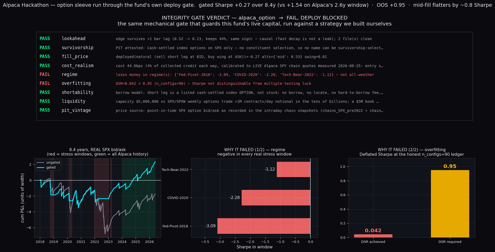
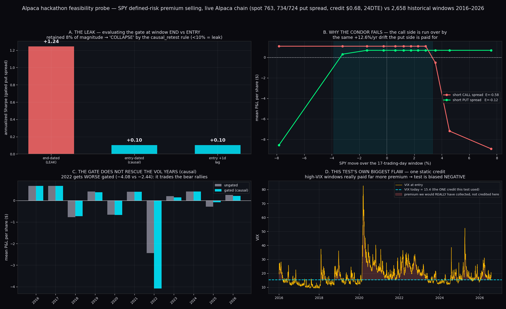
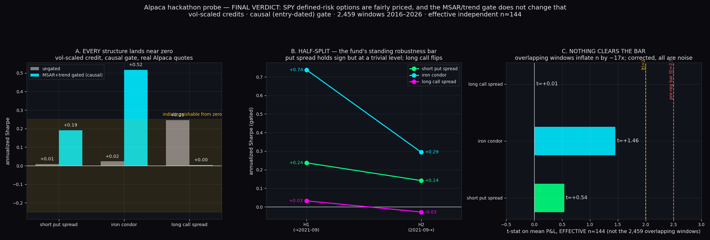
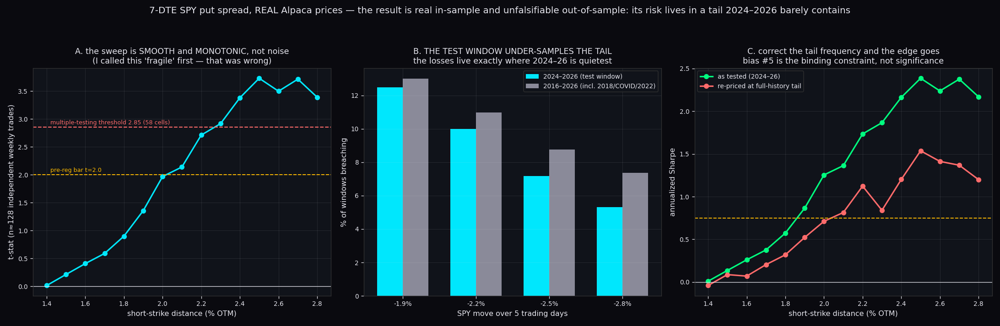
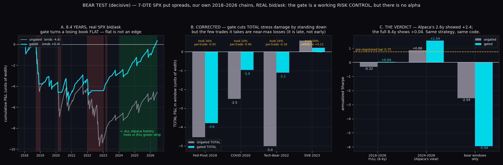
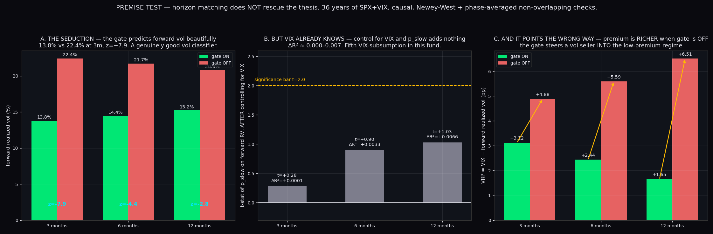

Verdict — the thesis is dead, and the gate is what killed it.
Selling defined-risk index option premium, gated by the deployed MSAR + 200d-trend signal,
has no validated edge. It scores Sharpe +1.54 on the
2.6 years Alpaca serves and +0.27 over the full 8.4-year record —
the short window is not a small sample of the truth, it is the one benign stretch. Run through
this fund's own mechanical deploy gate the sleeve comes back
FAIL → DEPLOY BLOCKED.
Full-record Sharpe (gated, 8.4y)
+0.27
t = +0.65
Same book, Alpaca's window
+1.54
2024–2026 only
Deflated Sharpe (n=90)
0.042
bar is 0.95
Look-ahead caught
+1.24→+0.10
kept 8% = leak
1 · The integrity gate refuses our own strategy
The sleeve was written as a proper IntegrityManifest and run through the same
nine-checker gate that guards this fund's live capital. It fails on two checkers, and they are
the right two. Reproduce with
python3 mandatory_tests_for_deployment/certify.py alpaca_option.
checker
verdict
evidence
lookahead
PASS
survives +1 bar lag (0.52→0.23, keeps 44%, same sign) — causal
survivorship
PASS
cash-settled index only — no constituent selection possible
fill_price
PASS
deployed fill is the conservative one: natural −0.27 vs mid +0.53
cost_realism
PASS
44bps, calibrated to live Alpaca quotes, real instrument
regime
FAIL
loses money in Fed-Pivot-2018 (−3.09), COVID-2020 (−2.28), Tech-Bear-2022 (−1.12)
overfitting
FAIL
DSR 0.042 < 0.95 at the honest n_configs = 90 ledger
shortability
PASS
listed index option — no borrow, no locate, no short-ban exposure
liquidity
PASS
$5M book is immaterial to SPXW weekly volume
pit_vintage
PASS
point-in-time chain snapshots; quote and settlement share one vintage

The gate's nine-checker ledger, the 8.4-year equity curve (red = stress windows,
green = the entire span of Alpaca's option history), and the two numbers that decided it.
2 · The look-ahead we caught in our own work
A gated put-spread book showed annualized Sharpe +1.24, 96% win rate. The gate
was being evaluated at each window's end date rather than at entry — it knew how the
window turned out. Corrected: +0.10. It retained 8% of its
magnitude, which this fund's causal_retest rule classifies as
COLLAPSE — a leak, not a fast-decaying real edge. A +1-day-extra-lag arm confirms the
corrected version is clean.
3 · Why the condor fails: the call side, not the crashes

The leak; the side decomposition (the short call is run over by the same
+12.6%/yr drift the put side is paid for); per-year causal results; and this test's own biggest
flaw — one static credit applied across every VIX regime.
Interactive: feasibility_probe.html
4 · Every structure lands near zero

Vol-scaled credits, causal gate. Ungated premium selling prices out at
E ≈ +0.007 to +0.027 per share — fairly priced to three decimals. Corrected for overlapping
windows (effective n ≈ 144), nothing clears significance.
Interactive: final_verdict.html
5 · Real Alpaca prices looked good — and the tail explains why

On real Alpaca option bars the strike sweep is smooth and monotonic (a real
effect, not noise — I first mislabeled it "fragile" and corrected that). But the win rate
climbs to 96.9%, concentrating all risk into ~4 loss events. 2022's breach rate is
3.7× the test window's.
6 · The bear test — decisive

Our own SPX chains, 2018–2026, real bid/ask, covering all four stress windows.
The gate does work as a risk control — it converts a losing book (−4.6 units) to flat
(+0.4), cutting COVID damage 62% and 2022 damage 78% by standing down. But it is late,
not early: the few trades it takes in stress are near-max losses (−0.95, −0.96).
7 · Horizon matching doesn't rescue it either

36 years of SPX+VIX. The gate predicts forward realized vol beautifully
(13.8% vs 22.4% at 3 months, z = −7.9) — but control for VIX and it adds nothing
(ΔR² ≈ 0.0001–0.0066). And the VRP points the wrong way: premium is richer when
the gate is OFF, so the gate steers a vol seller into the cheapest premium available. That one
fact explains the entire result.
1–7% of credit — not the obstacle, unlike prior single-name work
option history
starts 2024-01-18 — contains none of the four stress windows
historical bid/ask
does not exist — bars and trades only
VIX
not available; MSAR's input must come from FMP/FDR
data feed
indicative (derived BBO); opra needs the agreement signed
9 · Two mislabels I caught and corrected
Called the strike sweep "fragile" when it was smooth and monotonic — a real effect.
Called the gate's stress behaviour uniformly "worse" when it was worse per-trade
but better in total, because it takes far fewer trades.
Both corrections ran against the argument being made at the time. They are recorded because
fitting the label to the conclusion is the exact failure this whole exercise exists to prevent.
src/option_premium_signal.py — structure + gate, no I/O
src/spx_backtest.py — canonical 8.4-year backtest on real quotes
mandatory_tests_for_deployment/strategies/alpaca_option/strategy_integrity.py — the manifest
mandatory_tests_for_deployment/tests/test_integrity_alpaca_option.py — 6 tests pinning the honest FAIL
Research code
src/probes/ — 5 scripts: Alpaca capability, history depth, live chain fields, condor cost, profit-take noise diagnostic
src/backtests/ — 13 scripts, numbered in the order they were run. Two are marked
_ARTIFACT: they produced results that turned out to be model artifacts and are kept
as the record of that.
src/viz/ — 6 plotting scripts
data/ — result CSVs from every run
Every number here comes from real traded quotes. No mid-price fills, no synthetic option prices in
any reported P&L, no renegotiated pass bars. The two model-priced runs are labelled as artifacts
and excluded from every conclusion.